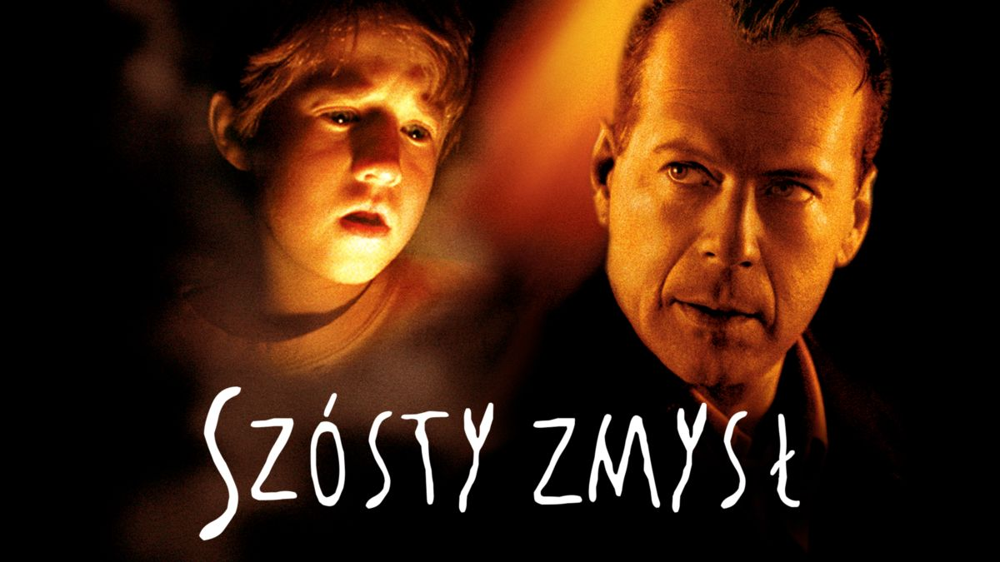

Mój ulubiony artysta to Depeche Mode
Mój ulubiony wykonawca muzyczny to Sting.
Sting naprawdę nazywa się Gordon Matthew Sumner i urodził się w 1951 roku w Newcastle.
Dorastał w zwyczajnej, angielskiej rodzinie,
która utrzymywała się z fizycznej pracy obojga rodziców. Jego ojciec był inżynierem,
choć pracował jako mleczarz, a matka fryzjerką.
Gordon dorastał z młodszym rodzeństwem - bratem Philipem
i dwoma siostrami Angelą oraz Anitą.
Mój ulubiony film to "Szósty zmysł"
Moja ulubiona książka to: